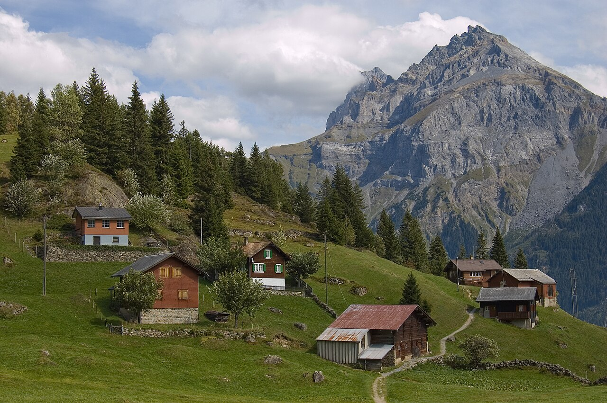
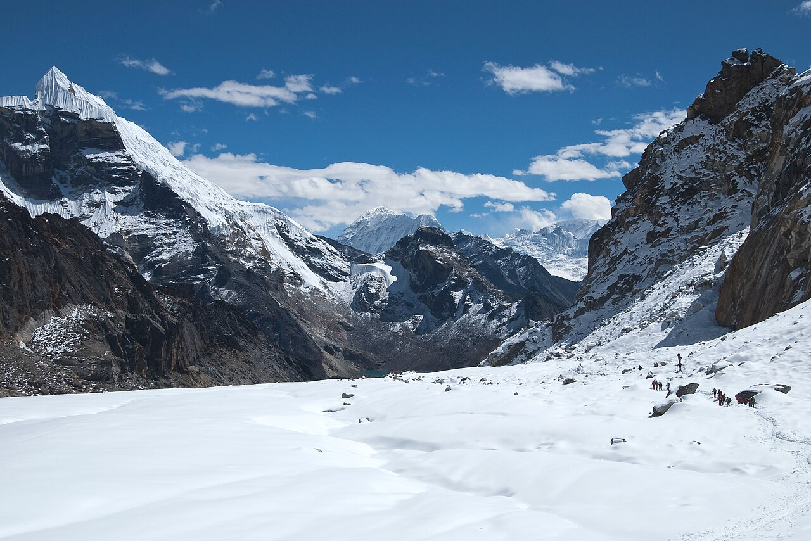
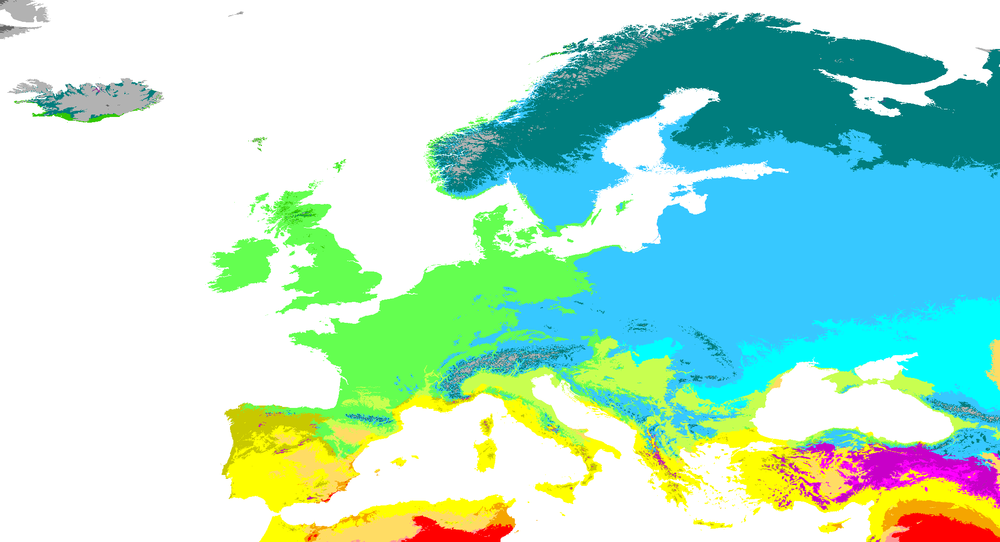
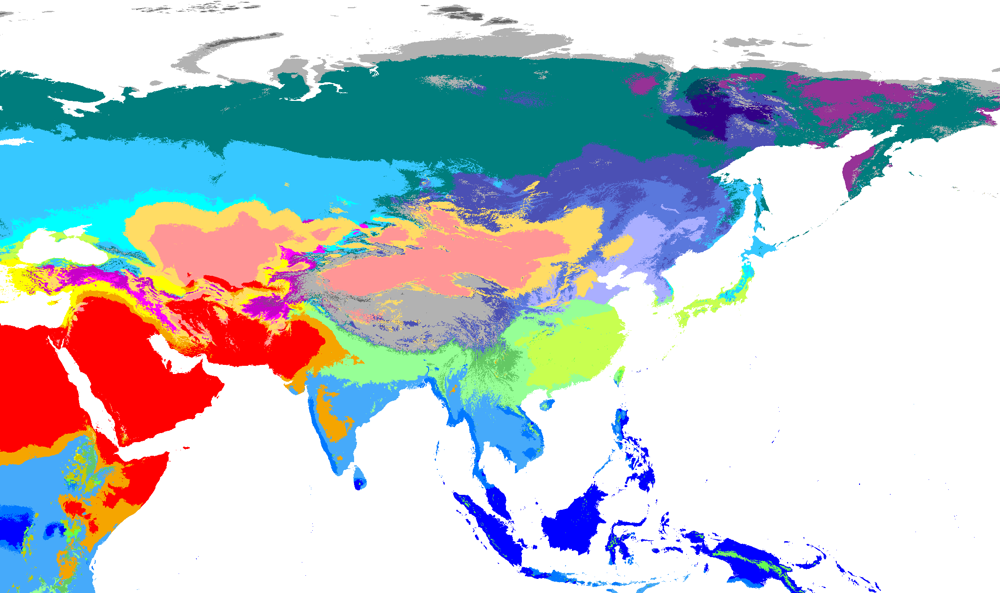

UN ATLAS DIGITAL INTERACTIVO
Un territorio.
Dos continentes.
Seguí la huella de Eurasia: una sola masa terrestre, innumerables paisajes y una historia compartida entre Europa y Asia.
Iniciar recorrido ↓
DESLIZÁ PARA EXPLORAR
41° N
12° E
12° E
35° N
105° E
105° E
TIERRA · 0141° 54′ N — 12° 29′ E
EXPLORAR
01 / UNA MASA CONTINENTAL
Una tierra,
dos nombres.
Eurasia es el gran bloque continental continuo formado por Europa y Asia. No existe un océano entre ambas: su división es una convención geográfica e histórica, trazada habitualmente por los montes Urales, el río Ural, el mar Caspio, el Cáucaso y los estrechos turcos.
Desde el Atlántico hasta el Pacífico, este espacio reúne la mayor superficie terrestre y a más de la mitad de la población mundial.
Seguir hacia Europa ↘≈55 MKM² DE SUPERFICIE TERRESTRE
2CONTINENTES CONECTADOS
≈5,5 mil MHABITANTES · ESTIMACIONES 2024
Cifras aproximadas: la superficie y la población varían según límites adoptados, año y fuente estadística.
02 / EL OESTE DE EURASIA
Europa
Un continente de penínsulas y mares, grandes llanuras y cordilleras jóvenes; sus fronteras y regiones reflejan convenciones geográficas e históricas.
EXPLORAR EUROPASEIS EJES
01 / PANORAMA
Una diversidad a escala continental
Europa se extiende desde el Atlántico hasta los Urales. Su tamaño relativamente compacto reúne numerosas penínsulas, mares, lenguas y trayectorias históricas.
- La frontera con Asia es convencional, no un límite oceánico.
- Las regiones pueden agruparse de distintas maneras según la fuente.
CUADERNO VISUAL · 01
Europa, en lugares

RELIEVE · 46,8° N · 8,6° E
Los Alpes, Suiza
Un paisaje de valles glaciares y cumbres que forma parte del gran arco alpino europeo.
Dato geográfico El macizo alpino se extiende por ocho países.
03 / EL ESTE DE EURASIA
Asia
El continente más extenso: desde el Ártico hasta el Índico y el Pacífico, con enormes contrastes de altitud, clima, población y cultura.
EXPLORAR ASIASEIS EJES
01 / PANORAMA
Un continente de grandes contrastes
Asia reúne desde llanuras árticas y estepas interiores hasta archipiélagos tropicales. Sus límites occidentales son convencionales y varían entre clasificaciones.
- La meseta tibetana y el Himalaya se alzan en el centro-sur.
- Las poblaciones y actividades se distribuyen de forma muy desigual.
CUADERNO VISUAL · 02
Asia, en lugares

ALTA MONTAÑA · 28,0° N · 86,8° E
Himalaya, Nepal
Un campo glaciar de alta montaña en el entorno del paso Cho La, dentro de la región del Everest.
Dato geográfico El Himalaya concentra numerosas cumbres de más de 8.000 m.
04 / PATRONES ATMOSFÉRICOS
Climas de
Europa y Asia.
La latitud, la distancia al mar, el relieve y la circulación estacional producen grandes contrastes. Los mapas muestran la clasificación Köppen–Geiger para 1991–2020; las síntesis y rangos de las fichas son orientativos, no promedios de cada región.

A · tropicalB · áridoC · templadoD · continental/fríoE · polar
Clasificación climática a escala continental; los bordes son generalizados y el mapa no sustituye datos meteorológicos locales.

A · tropicalB · áridoC · templadoD · continental/fríoE · polar
Clasificación climática a escala continental; los bordes son generalizados y el mapa no sustituye datos meteorológicos locales.
FUENTE CARTOGRÁFICA
Beck et al. (2023), mapas Köppen–Geiger de 1 km, versión 3, periodo 1991–2020 · Scientific Data · DOI 10.1038/s41597-023-02549-6 · licencia CC BY 4.0. Límites superpuestos: Natural Earth 1:110m.
Cinco dominios climáticos
Del frío extremo a los monzones
Temperaturas y precipitaciones expresan rangos climáticos generales y varían por altitud, estación, exposición y periodo de observación. En Köppen–Geiger, las letras agrupan regímenes, no fronteras políticas.
05 / CARTOGRAFÍA EXPLORABLE
Un territorio,
distintas lecturas.
Alterná entre capas temáticas y seleccioná un país para ver su nombre. Los límites son cartográficos y no expresan una postura política.
EXPLORACIÓN TERRITORIAL
Regiones en contexto
Elegí una región para consultar su ubicación, países y rasgos físicos y humanos. La selección también resalta sus unidades en el mapa del Atlas.
EUROPA · REGIÓN CENTRAL
Europa central
Entre las llanuras del norte y los arcos montañosos alpinos y carpáticos.
- Países / áreas
- Relieve
- Clima
- Sociedad y economía
Agrupación geográfica didáctica; no constituye una clasificación política.
Contorno de referencia Natural Earth 1:110m. Las áreas pequeñas pueden no distinguirse a esta escala.
FORMAS DEL TERRITORIO
Relieves y aguas destacados
Doce referencias para orientarse. Cada ficha puede localizarse en el mapa regional.
ATLAS / FICHAS DE CAMPO
Leer el territorio
en capas.
Explorá cada ficha para conocer límites, regiones, paisajes, población y economía. Las cifras son aproximadas y dependen de la delimitación empleada.
01 / 03VISIÓN GLOBAL
Eurasia
Una continuidad terrestre entre el Atlántico y el Pacífico.
Forma y escala
Con aproximadamente 55 millones de km², Eurasia es el mayor bloque continental del planeta. Comprende cerca de 10,2 millones de km² de Europa y 44,6 millones de km² de Asia; las cifras cambian según el criterio de frontera.
Una frontera convencional
La separación Europa–Asia no es un límite oceánico. La línea más extendida sigue los Urales, el río Ural, el Caspio, la divisoria del Gran Cáucaso y los estrechos del Bósforo y los Dardanelos; existen variantes.
Relieve y aguas
El arco alpino-himalayo, las llanuras septentrionales, la meseta tibetana y cuencas interiores contrastan con costas muy recortadas. El Volga, Danubio, Rin, Yangtsé, Ganges, Indo, Obi, Yeniséi y Lena drenan ambientes distintos.
Personas y conexiones
Europa y Asia reúnen alrededor de 5,5 mil millones de habitantes en estimaciones de 2024. Las rutas terrestres y marítimas, las migraciones, las cadenas productivas y los intercambios culturales vinculan regiones muy diversas.
GEOGRAFÍA FÍSICA · HUMANA · POLÍTICA↗ 55° E
Datos orientativos basados en estimaciones demográficas de Naciones Unidas (World Population Prospects 2024) y superficies continentales de referencia. Los límites, extremos y recuentos de países pueden variar entre fuentes.
06 / DOS CONTINENTES
Europa vs. Asia
Escalas distintas, conectadas por una misma masa terrestre. Las cifras son aproximadas y siguen criterios geográficos explícitos.
EJEEUROPAASIA
Superficie
≈10,2 M km²
≈44,6 M km²
Población · 2024
≈745 millones
≈4.800 millones
Estados · aproximación
≈44
≈48
Densidad · hab./km²
≈73
≈108
RelieveGran Llanura Europea, Alpes, Pirineos, Cárpatos y montes Escandinavos.Llanuras siberianas, meseta tibetana, Himalaya, Pamir y grandes cuencas.
HidrografíaRíos de recorrido relativamente corto; destacan Volga, Danubio y Rin, junto a numerosas cuencas compartidas.Grandes sistemas fluviales como Yangtsé, Ganges-Brahmaputra, Indo, Mekong, Obi, Yeniséi y Lena.
ClimasPredominan los templados oceánicos, continentales y mediterráneos; también hay condiciones subárticas y alpinas.Desde climas árticos y continentales hasta desiertos, monzones, trópicos y zonas ecuatoriales.
Diversidad culturalMúltiples familias lingüísticas, tradiciones y Estados en un espacio de alta conectividad regional.Gran diversidad de pueblos, lenguas y religiones entre Asia occidental, central, meridional, oriental y sudoriental.
EconomíaServicios, industria, comercio, turismo y agricultura; grandes diferencias entre países y subregiones.Manufactura, servicios, agricultura, energía y tecnología con contrastes marcados entre economías.
Distribución territorialCostas muy recortadas, penínsulas y distancias relativamente cortas entre muchas regiones.Enormes distancias, archipiélagos, interiores continentales y densidades muy desiguales.
Población: ONU, World Population Prospects 2024. Regiones: ONU M49. Superficies y recuentos son aproximados; densidades derivadas de población y área. Las comparaciones culturales y económicas son síntesis cualitativas, no rankings.
07 / GEOGRAFÍA POLÍTICA ACTUAL
Geopolítica
de Eurasia.
Guerras, disputas de soberanía y tensiones diplomáticas no son lo mismo. Estas fichas ubican algunos casos representativos y resumen sus antecedentes, actores y efectos sin equiparar sus contextos.
REFERENCIA DE ACTUALIZACIÓN · 22 DE NOVIEMBRE DE 2026 Las situaciones cambian; las fuentes enlazadas ofrecen sus últimas actualizaciones.
Guerra, seguridad y fronteras políticas
Marcadores orientativos, no líneas de frente ni límites de soberanía. Base cartográfica: Natural Earth 1:110m.
Rusia–Ucrania
- Ubicación y actores
- Ucrania y zonas ocupadas por Rusia; participan los Estados de ambos países y, en distintos grados, aliados y organizaciones que prestan apoyo o mediación.
- Antecedentes y causas
- La guerra iniciada en 2014 se amplió con la invasión rusa a gran escala del 24 de febrero de 2022. Sus antecedentes incluyen disputas sobre soberanía, seguridad, orientación política y el orden europeo; las partes ofrecen narrativas y justificaciones contrapuestas.
- Situación y consecuencias
- Al corte de noviembre de 2026, continúa la guerra a gran escala. Muertes, desplazamiento, daños a infraestructura y ocupación de territorios tienen consecuencias humanitarias y económicas dentro y fuera de la región.
Rusia y la seguridad europea
- Ubicación y actores
- Fronteras y espacios aéreos del flanco oriental; Rusia, países europeos, la OTAN y la Unión Europea, con mandatos distintos.
- Antecedentes y causas
- La guerra en Ucrania agravó desacuerdos previos sobre ampliación de alianzas, despliegues militares, control de armas y seguridad regional.
- Situación y consecuencias
- Relaciones muy deterioradas, sanciones y mayor cooperación defensiva entre algunos países europeos. La tensión no constituye por sí misma una guerra directa entre Rusia y la OTAN; los riesgos de escalada y los efectos sobre energía, gasto público y seguridad siguen siendo debatidos.
Kosovo y Serbia
- Ubicación y actores
- Balcanes occidentales; autoridades de Kosovo y Serbia, comunidades locales y la Unión Europea como facilitadora del diálogo.
- Antecedentes y causas
- El conflicto de fines de los años noventa, la administración internacional posterior y la declaración de independencia de Kosovo en 2008 dejaron desacuerdos sobre reconocimiento, instituciones y derechos de las comunidades.
- Situación y consecuencias
- Es una disputa política y de reconocimiento, no una guerra convencional actual. El diálogo busca normalizar relaciones; incidentes y desacuerdos afectan la estabilidad y la integración europea de la región.
Chipre
- Ubicación y actores
- Isla del Mediterráneo oriental; comunidades grecochipriota y turcochipriota, República de Chipre, Turquía, Grecia y Naciones Unidas.
- Antecedentes y causas
- La crisis intercomunitaria y los acontecimientos de 1974 precedieron a la división de facto de la isla y a una zona de amortiguación supervisada por la ONU.
- Situación y consecuencias
- No existe un acuerdo político integral. UNFICYP mantiene la vigilancia del cese del fuego y la zona de amortiguación; la división condiciona la vida cotidiana, la movilidad y las negociaciones.
Conflictos, soberanía y tensiones regionales
Marcadores orientativos; su tamaño no representa control territorial ni el alcance de las hostilidades. Base cartográfica: Natural Earth 1:110m.
Israel y Palestina
- Ubicación y actores
- Israel, la Franja de Gaza, Cisjordania y Jerusalén Este; Israel, grupos armados palestinos —entre ellos Hamás—, la Autoridad Palestina y actores regionales e internacionales.
- Antecedentes y causas
- Un conflicto de larga duración ligado a autodeterminación y soberanía, ocupación iniciada en 1967, seguridad, asentamientos, refugiados y el estatus de Jerusalén. Los ataques de Hamás del 7 de octubre de 2023 y la posterior campaña militar israelí intensificaron la guerra en Gaza.
- Situación y consecuencias
- En noviembre de 2026, OCHA sigue documentando violencia, desplazamiento y necesidades humanitarias en el territorio palestino ocupado. La población civil afronta muertes, daños, restricciones de acceso y una crisis prolongada; el informe enlazado fecha los datos.
Estrecho de Taiwán
- Ubicación y actores
- Estrecho entre China continental y Taiwán; República Popular China y autoridades de Taiwán, con Estados Unidos y otros países como actores externos relevantes.
- Antecedentes y causas
- La guerra civil china culminó en 1949 con gobiernos separados. Pekín sostiene que Taiwán forma parte de China; en Taiwán coexisten posiciones diversas sobre el estatus y el futuro político de la isla.
- Situación y consecuencias
- No hay una guerra abierta entre ambos gobiernos al corte citado, pero continúan tensiones diplomáticas y militares. El desacuerdo afecta la seguridad regional, las relaciones internacionales y rutas comerciales estratégicas.
Tíbet
- Ubicación y actores
- Región Autónoma del Tíbet y zonas tibetanas de otras provincias de China; Gobierno de la República Popular China, población tibetana y comunidades en el exilio.
- Antecedentes y causas
- La República Popular China estableció su control sobre el Tíbet en la década de 1950; el levantamiento de 1959 llevó al exilio del Dalái Lama. Pekín describe el proceso como integración y desarrollo; voces tibetanas y organizaciones de derechos humanos denuncian restricciones a la autonomía, la religión y la lengua.
- Situación y consecuencias
- No es una guerra convencional actual: es una cuestión política e histórica dentro de China, con desacuerdos sobre autonomía, identidad, educación y derechos. Las fuentes y perspectivas difieren; esta ficha no presenta la independencia como estatus vigente.
Mar de China Meridional
- Ubicación y actores
- Mar del Pacífico occidental; China, Taiwán, Filipinas, Vietnam, Malasia y Brunéi mantienen reclamos que se superponen en torno a islas, arrecifes y zonas marítimas.
- Antecedentes y causas
- Las reclamaciones históricas y las zonas económicas exclusivas definidas por la Convención del Mar se cruzan en un espacio de pesca, recursos y rutas internacionales. En 2016, un tribunal arbitral emitió un laudo en el caso iniciado por Filipinas contra China; China no lo acepta.
- Situación y consecuencias
- Persisten desacuerdos diplomáticos e incidentes marítimos; no equivalen a una guerra declarada. Las disputas afectan la pesca, la explotación de recursos, la libertad de navegación y la seguridad regional.
Altos del Golán
- Ubicación y actores
- Meseta entre Siria e Israel; ambos Estados y la Fuerza de las Naciones Unidas de Observación de la Separación (UNDOF).
- Antecedentes y causas
- Israel tomó el Golán a Siria durante la guerra de 1967 y extendió allí su legislación en 1981. La resolución 497 del Consejo de Seguridad declaró nula esa decisión; Israel mantiene el control de facto y Siria reclama el territorio.
- Situación y consecuencias
- La ONU continúa observando la zona de separación y el alto el fuego. El estatus territorial sigue sin resolverse y las tensiones regionales afectan a comunidades y seguridad fronteriza.
Síntesis educativa: una guerra, una disputa territorial, una controversia de soberanía y un desacuerdo político requieren descripciones distintas. Las ubicaciones son esquemáticas y no expresan posiciones sobre fronteras ni soberanía.
08 / TRAZABILIDAD
Fuentes y
referencias.
Datos y límites simplificados para lectura escolar. Consultá las fuentes originales para definiciones, series y licencias completas.
Naciones Unidas
World Population Prospects 2024. Las cifras continentales son estimaciones regionales redondeadas.
Consultar WPP ↗ONU M49
Composición de regiones estadísticas. Las agrupaciones educativas del sitio no equivalen a una lista de Estados soberanos.
Consultar M49 ↗Natural Earth
Fronteras generalizadas, ríos y relieve hipsométrico sombreado. Datos de dominio público; no representan una posición sobre soberanía ni sirven para medir a gran escala.
Términos y datos ↗Ríos ↗Relieve 10m ↗Encyclopaedia Britannica
Referencias de superficie continental y consulta general de relieve, tectónica, monzones y modelado glaciar. Las superficies varían según la delimitación.
Europa ↗Asia ↗Tectónica ↗Monzón ↗Fiordo ↗Banco Mundial
ECA cubre Europa y Asia central; EAP, Asia oriental y el Pacífico. No son estadísticas continentales comparables.
Región ECA ↗Región EAP ↗Wikimedia Commons
Autoría, archivo y licencia aparecen junto a cada fotografía. Las atribuciones enlazan a la ficha original.
Créditos individuales en las galerías y tarjetas de relieve y clima.Köppen–Geiger · 1 km
Mapas de Beck et al. (2023), versión 3, con clases agrupadas para lectura escolar. Publicados con licencia CC BY 4.0.
Artículo científico ↗Datos GloH2O ↗Fuentes institucionales
Los enlaces de cada ficha conducen a actualizaciones de OCHA, ONU, OTAN, Unión Europea, CRS y el tribunal arbitral. Las situaciones y las posiciones oficiales pueden cambiar.
OCHA · Ucrania ↗OCHA · territorio palestino ocupado ↗Las cifras, fronteras y extremos geográficos dependen de convenciones y fechas de referencia; las densidades se derivan de estimaciones de población y superficie aproximadas. El mapa Köppen–Geiger resume el periodo 1991–2020; la geopolítica se fecha al 22 de noviembre de 2026 y no sustituye la consulta de informes y posiciones originales.
UN PLANETA · MUCHAS PERSPECTIVAS
“El ser humano no puede descubrir nuevos océanos hasta que no gana la valentía de dejar atrás la orilla”
— André Gide
Volver a la órbita ↑